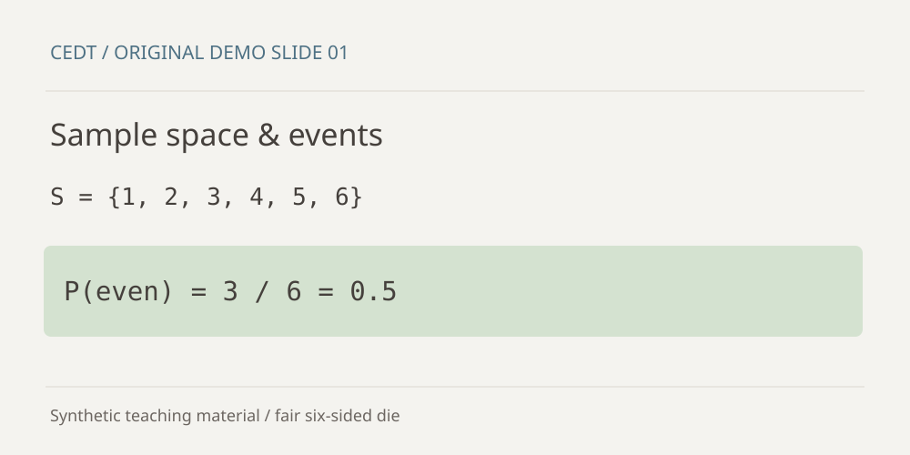

Lesson 01 · สไลด์สาธิตที่สร้างขึ้นใหม่ · ~15 นาที
เริ่มจาก Sample space
เป้าหมายบทนี้: นับผลลัพธ์ก่อนแทนสูตร และอธิบายคำตอบได้
1แนวคิด
เมื่อทอยลูกเต๋ายุติธรรมหนึ่งลูก Sample space คือ {1, 2, 3, 4, 5, 6} ส่วน Event คือผลลัพธ์บางส่วนที่เราสนใจ เช่น “แต้มเป็นเลขคู่” คือ {2, 4, 6}

P(A) = จำนวนผลลัพธ์ใน A / จำนวนผลลัพธ์ทั้งหมด เมื่อทุกผลลัพธ์มีโอกาสเท่ากัน
ถ้าเปลี่ยนเป็น “แต้มมากกว่า 4” จะมีผลลัพธ์กี่แบบ?
มี 2 แบบ คือ 5 และ 6 ดังนั้น P(A) = 2/6 = 1/3
อย่าใช้สูตรนับจำนวนหากผลลัพธ์มีโอกาสเกิดไม่เท่ากัน เช่น ลูกเต๋าถ่วงน้ำหนัก
2ลองดูตัวอย่าง
เลขคู่มี 3 แบบจากทั้งหมด 6 แบบ ดังนั้น P(เลขคู่) = 3/6 = 0.5
3ลองทำด้วยตัวเอง
ติดตรงไหน ถาม Claude ได้เลย บอกเลขบทกับเลขข้อมาด้วย